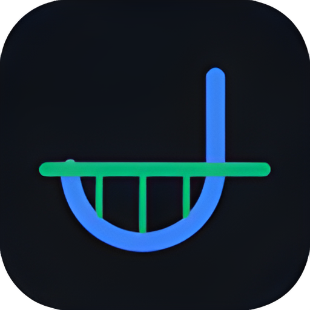
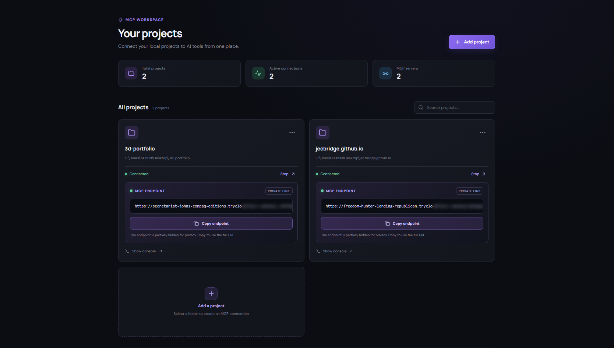

Local project access
Choose the folders you want to work with. Keep your projects organized in one desktop workspace.

JecBridgeBring your local folders into your AI workflow. JecBridge makes it simple to connect project workspaces to MCP-compatible AI assistants — all from one desktop app.

A lightweight desktop control center for connecting the folders you choose to your AI tools.
Choose the folders you want to work with. Keep your projects organized in one desktop workspace.
Start a project connection and use its MCP endpoint with a compatible AI client.
Create a shared skills library and assign the right instructions to each project.
Enable or disable projects and manage access from a clearer workspace.
Check for new releases, download updates and install them from Settings.
No terminal commands needed for everyday use.
Add the local folder you want your AI assistant to work with.
Start the connection and copy the MCP endpoint shown in the app.
Paste the endpoint into an MCP-compatible client and start working.
Windows 10/11 · x64 · Includes reusable skills, improved project controls and in-app updates.